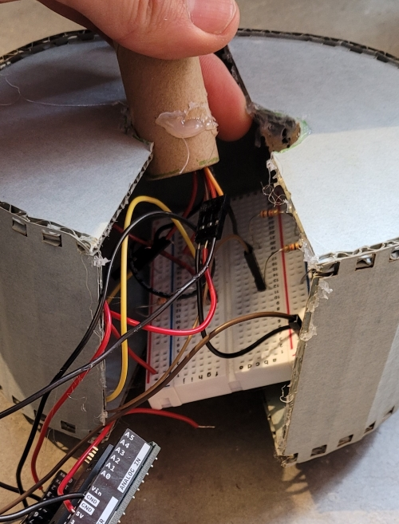
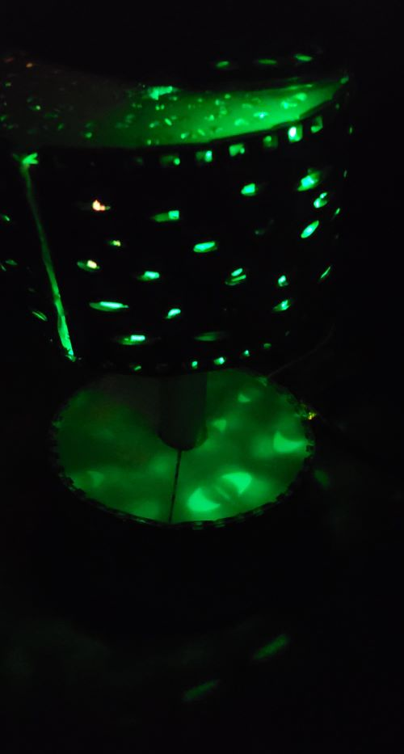
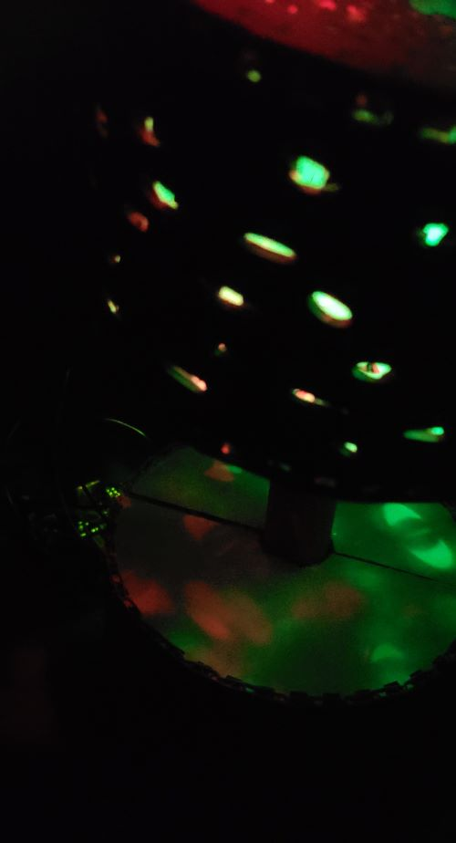
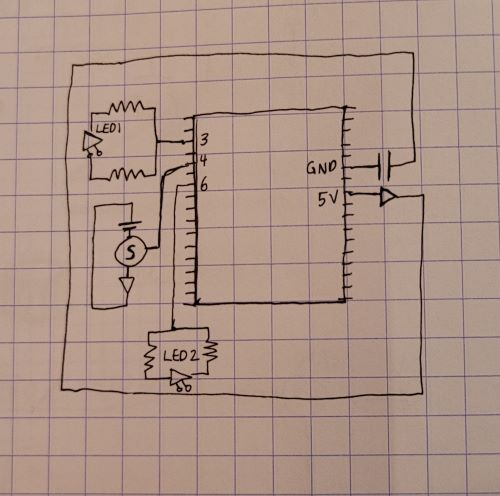

<!DOCTYPE html>
<html lang="en">
<html>

<head>
<style>
.p1 {
  font-family: "Times New Roman", Times, serif;
}

.p2 {
  font-family: Arial, Helvetica, sans-serif;
}

.p3 {
  font-family: "Lucida Console", "Courier New", monospace;
}
</style>
</head>

<body>

</body>
</html>


<title>PS70: Intro to Digital Fabrication </title>
<link href="https://cdn.jsdelivr.net/npm/bootstrap@5.1.1/dist/css/bootstrap.min.css" rel="stylesheet">
<link href="../style.css" rel="stylesheet">

<nav class="navbar navbar-expand-sm navbar-light bg-light">
  <div style="align-items: left; justify-content:left;" class="container-fluid">
    <h3 class="nav-title"> PS70: Intro to Digital Fabrication</h3>
    <div class="navbar-nav">
      <h4></h4>
      <h4><a class="nav-link" href="../index.html">Home</a></h4>
      <h4><a class="nav-link" href="../about.html">About Me</a></h4>
    </div>
  </div>
</nav>

<body>


<xmp style="display:none;">
<br> 
<p class="p3">

  <head>
<style>
body {
  background-color: #f0edfa;
}
</style>
</head>
<body>

 <b> Week 3: Microcontroller, LEDs, Servos </b> <br>

 <br> Learned many new things this week, including how to code - the only coding experience I have was a CS 101 Javascript class in...2014? And I think I failed? (I for sure failed that class) Anyways, this week I had two goals:
<br>

<br>
1. Learn C++ basics
<br>
2. Make something move without it jamming
<br>

 <br>
 I also wanted to incorporate LED lights because I like the way they look. Okay-- onto the process: <br>

Biggest hurdle was coding for sure - basically I decided I just wanted to like, FULLY understand and play around with combining the library examples. I wanted to incorporate Servo sweep with LED PWM fades, but when I was working with the Arduino Uno examples, I had a lot of issues with the delay function, as the examples wouldn't run simultaneously, and the delay really just gummed it up. Found out this is basically because this just how Arduino Uno works, and set on to the next hurdle: trying to understand how to code without using delay. 
<br>

I tried out class() but still don't feel completely confident that I know how to utilize it very effectively... And I knew that I wanted the code to be based off of millis() and not delay(). Then I was thinking about how I wanted the LED fade to be smoother, and was wondering how to make it undulate smoothly, like a wave. I did think of using the cosine function but was struggling with the math. <br>

So with that in mind, I totally googled it and found an Arduino forum where someone had the same problem with delays, and someone else provided code on how to do an LED fade with cos/sin functions. But I did add in my own servo code on how to get the servo motor motion to undulate in time, so. Kind of a cherry on top situation. 

<br>

<code>
  //struggled with getting a servo motor to run simultaneously with LEDs - googled and came across arduino forum 
//(https://forum.arduino.cc/t/how-to-fade-an-led-up-and-down-without-using-delay/12069/7) 


#include < Servo.h >

Servo myservo; //create servo object to control the servo 

#define servoPin1 4

int value1, value2, value3; //
int ledpin = 6; //LED to digital pin 6
int ledpin2 = 3; //LED to digital pin 3      

long time =0; //long variable

int amplitude = 128; //cos wave goes from -1 to 1 - amplitude is first half 0 to 1?
int offset = 127; //offset accounts for cos wave being -1 - makes it so LED runs 1 - 255 instead 
int period = 2500; //amount of time for entire fade cycle
int displace = 625; //makes it run opposite of first LED

void setup() {
  // put your setup code here, to run once:
myservo.attach(4);
}

void loop() {
  // put your main code here, to run repeatedly:
time = millis();
value1 = amplitude+offset*cos(2*PI/period*time);
value2 = amplitude+offset*cos(2*PI/period*(displace-time));
value3 = 90+90*cos(2*PI/period*time);
analogWrite(ledpin, value1);
analogWrite(ledpin2, value2);
myservo.write(value3);
}

</code>

<br>

And it worked, I think?
<br> <br>
<video width="600" height="600" controls>
  <source src="45sec.mp4" type="video/mp4">
</video> <br> <br>

<b> How to Make this Very Loud and Not exactly good to use as a light source Light Wave Lamp </b> <br>

Here are the materials I used, ordered from most to least accessible : <br>
-Hot glue <br>
-Plastic straw <br>
-Microcontroller, wires, breadboard<br>
-2 LED pins (one green, one red) <br>
-Servo motor <br>
-Blue archival cardboard <br>
-Miniature sturdy cardboard tube that you saved from your order of neodymium magnets last July <br>
 <br>

 <b> Assembly </b> <br>

 Fusion360 file for the base/head: <a href="cyl v2.dxf" download> File </a> <br>

Lasercut files into cardboard - minimum 2 copies of the long sides, and 10 copies of the half circle sides. I will now refer to the pressfit object a half/halves. <br>

Stuff wires down cardboard tube, then connect to breadboard/microcontroller (following the code, pin 3 and 6 for LEDs, pin 4 for the servo.), then cut half circles into the base halves (best practice would probably have been to also model that in Fusion) <br> <br>
 <br>

Attach servo motor to the top of the top halves, cut about 0.5" of a straw/plastic tube, fill with hot glue and attach to top of motor (is this the best practice?), then attach the last 2 half circle sides. <br> <br>


 <br> 



<br>

</p>

</xmp>
</body>

<script src="../strapdown.js"></script>
<script src="https://cdn.jsdelivr.net/npm/bootstrap@5.0.2/dist/js/bootstrap.bundle.min.js" ></script>

</html>